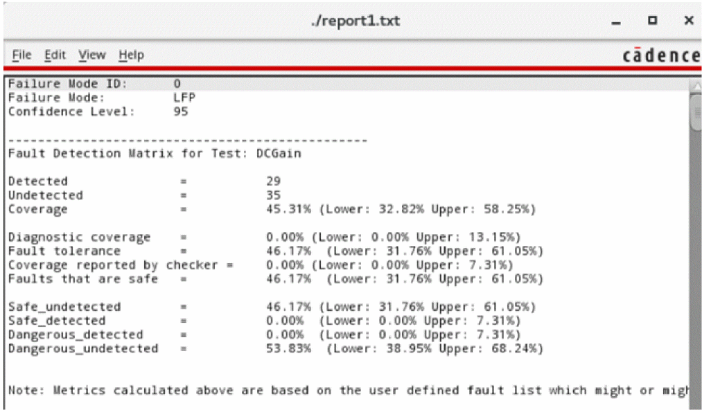

maeGenerateFuSaReport
maeGenerateFuSaReport(
[ ?session t_sessionName ]
[ ?historyName t_historyName ]
[ ?outFile t_outFile ]
[ ?checkerExprList l_checkerExprList ]
[ ?mode t_mode ]
[ ?modeID x_modeID ]
[ ?confidenceLevel n_confidenceLevel ]
[ ?viewFusaReport g_viewFusaReportValue ]
)
=> t / nil
Description
Generates a functional safety report for a fault simulation run.
Arguments
|
?session t_sessionName
|
|
|
Name of a session.
Default: Current session
|
|
?historyName t_historyName
|
|
|
Name of the history for which you want to generate the report.
Default: "", which implies that results from the last run fault simulation are used for the report.
|
|
?outFile t_outFile
|
Path of the file in which the report is to be written.
Default value: "./FuSAReport.txt"
|
|
?checkerExprList l_checkerExprList
|
|
|
List of the names of the checker expressions to be used to check the output of the checker blocks.
Default value is "". You must specify at least one expression.
|
|
?mode t_mode
|
The failure mode to be printed in the report.
-
SPF: Single Point Failure -
LFC: Latent Fault Continuous -
LFP: Latent Fault Periodic
Default value is "". You must specify a valid mode to run the function successfully.
|
|
?modeID x_modeID
|
An integer ID of the failure mode being addressed with this report.
Default value: 0
|
|
?confidenceLevel n_confidenceLevel
|
|
|
A confidence level, in percentage, to show the corresponding confidence intervals in the fault detection matrix.
Default value is 0. You must specify a positive floating value to run the function successfully.
|
|
?viewFusaReport g_viewFusaReportValue
|
|
|
Specifies whether to open the report after it is created.
Default value is nil.
|
Value Returned
|
t
|
A functional safety report is generated successfully.
|
|
nil
|
The functional safety report was not generated or could not be saved at the given file path.
|
Example
The following example shows how to generate a functional safety report:
maeGenerateFuSaReport( ?outFile "./report1.txt" ?checkerExprList '("problemDetected2") ?mode "LFP" ?confidenceLevel 95 )
=>t
; Saves the following report:

Related Topics
Running Functional Safety Checks
Return to top